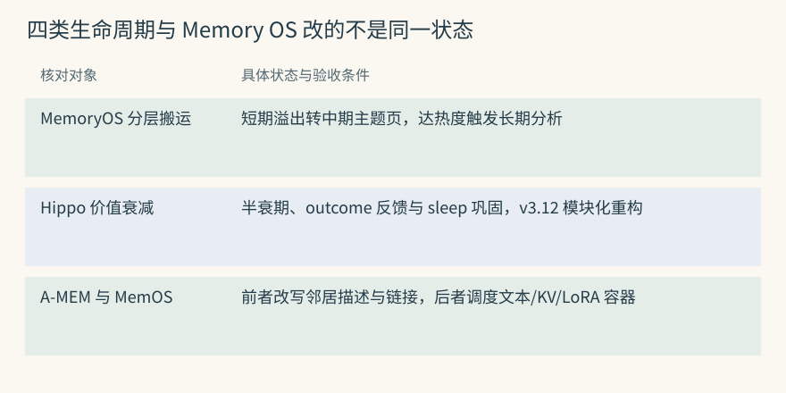
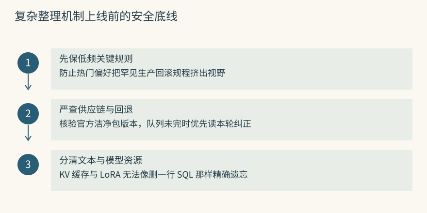

Memory OS 与生命周期路线
四个都在“整理记忆”的项目，动的根本不是同一个东西
研发助手在团队里跑满半年，你会同时撞上四种完全不同的膨胀压力：
- 对话太长，近期上下文装不下，翻旧账越来越慢；
- 半年攒了几百条排障提醒，常用规程和过时 workaround 混在一起互相挤占名额；
- 一次新复盘推翻或补充了三个月前那份旧笔记的排查线索；
- 不仅想管文本记忆，还想把长提示词前缀的 KV Cache 或定制微调 LoRA 一起调度起来。
MemoryOS、Hippo Memory、A-MEM、MemOS 四个项目经常被打包称作“Memory OS / 生命周期路线”，但翻开代码就会发现，它们动的手术对象完全不同！

MemoryOS：按容量溢出搬页，按热度提升长期知识
MemoryOS 把对话记忆按操作系统多级缓存的思路拆成三层（详见 updater.py、mid_term.py、retriever.py）：
- 短期层（Short-term）：定长队列放最近几轮问答。一旦塞满，最老的问答被弹出，打包成带时间戳和前后链接的
page； - 中期层（Mid-term）：不是按聊天窗口分，而是按主题连续性把相近的
page归到同一个主题session下，维护主题摘要、访问次数和热度heat（容量满了走evict_lfu()淘汰冷主题）； - 长期层（Long-term）：某个主题的热度跨过阈值，才触发长期分析，提炼成用户画像和长期知识。检索时先粗筛中期主题摘要，再在命中的主题里挑高分
page，最后连同长期画像拼进 Prompt。
这套状态机写得很直观，但它有两个必须防住的坑：
- 摘要漏词一竿子打翻一船人：如果中期主题摘要只写了“支付网关配置讨论”而漏掉了
PAY-409，那这个主题下面所有含PAY-409细节的page都会在粗筛阶段被直接挡掉； - 冷纠正被旧画像压死：林远刚发了一句低频但极其明确的纠正“以后别自动格式化 SQL”，因为只说过一次热度不够，还没晋升到长期层，下轮读取旧画像照样会覆盖新要求。
此外，MemoryOS 仓库自 2026 年 7 月后长期低频停滞，非常适合用来学习“短中长期页面搬运”的状态机思想，直接上生产需自担并发、多租户与维护成本。
Hippo Memory：把“影响力”拆成时间、召回与真实结果
Hippo Memory（2026-11-21 最新 v3.12.0 提交 51c74c33dbe9）是一款非常贴近编码 Agent 的本地记忆工具：零模型调用默认写入、SQLite + 人类可读 Markdown 镜像（.hippo/）、原生支持多款编码 Agent（Claude Code / Codex / Cursor / OpenCode 等）共用同一个项目记忆库。
我们在 2026-11 最新快照里看到，Hippo 已经完成了非常漂亮的架构模块化拆分：
- 强度与半衰期（memory.ts）：一条记忆的内容可以多年不变，但它的影响力随闲置天数按半衰期指数衰减（比如半衰期 6 天，18 天后纯衰减项降到
0.125）；高危必守规程可以通过pinned锁死永不衰减； - 把“被搜到”和“帮上忙”拆开（
applyOutcome）：检索命中一次只算访问，任务翻车时执行hippo outcome --bad才真正削弱误导记忆的寿命，避免垃圾记忆自我强化； - 集中巩固（sleep.ts）：把相关经验合并、把低强度过时条目归档待恢复；
- 多路检索与物理粒子实验（physics-search.ts）：除了 BM25 / 向量混合与带
asOf的多跳图召回，还保留了基于单位球面粒子引力/排斥力的启发式重排实验。
值得特别点赞的是 Hippo 作者的工程诚实度：它在 README 和评测报告里明确标出了哪些实验结论无法归因于记忆捕获、主动撤回了早期无法稳定复现的 sequential-learning 增幅数据。同时选型也要正视它的现实边界——核心几乎由单人维护，团队大规模生产使用前需要评估接管能力。
A-MEM：新笔记进来，顺手改写旧笔记的发现线索
A-MEM（memory_system.py）受卡片盒笔记法启发：
- 写一条新笔记时，
analyze_content()先帮它生成context、keywords、tags； - 紧接着
process_memory()拉出最相近的旧笔记，让大模型做演化决策：要么建立双向links（strengthen），要么直接改写旧笔记的context和tags（update_neighbor）！
比如三个月前有一条含糊的旧笔记“支付网关超时需要查缓存”，今天新写了一份复盘“确认 PAY-409 来自幂等键 TTL 不足”。A-MEM 可以顺手给旧笔记补上 PAY-409 和 idempotency_key 线索，以后一搜就能串起来。
但用不好就会踩两个坑：一是邻居描述漂移（把今天的猜测写进三个月前的旧笔记，改歪了历史语气，审计时分不清哪句是原话）；二是检索截断吞邻居——search_agentic() 先拿近邻再追加 links 邻居，最后一把 memories[:k] 切下去，刚补进来的邻居很可能全被切光了。A-MEM 自 2025-12 起已停更，主要作为笔记演化思路的参考样板。
MemOS：把明文、KV Cache 和 LoRA 装进同一个资源容器
**MemOS（MemTensor/MemOS）**野心最大——它想做面向 Agent 的“记忆操作系统”，用 GeneralMemCube 把三种物理形态完全不同的记忆统一封装起来：
- Plaintext（明文 / 图）：常规可检索、可引用、可逐条删除的文本事实；
- Activation（KV Cache）：特定模型处理超长固定前缀的中间激活缓存，用来省推理计算，绝不是可按词搜索的业务事实，换个基座模型立刻作废；
- Parametric（LoRA Adapter）：通过参数适配改变模型行为，几乎无法像删一行 SQL 那样“精准遗忘某一条用户隐私”。
再配合 queue_ops.py 的异步 Scheduler（支持本地和 Redis 队列，按 user/cube 分组派发和限流），把重型整理任务甩到后台。配置时注意：标记 uninitialized 的模块根本不会初始化实例，先只开 Plaintext 把队列积压、读取延迟和回退跑顺，别一上来就混着上 KV 和 LoRA。
2026-11 重要安全警示：MemOS 供应链事件教训与
v2.0.36加固 2026 年 9 月底，MemOS 生态曾遭遇一起严重的供应链投毒事件——PyPI 上的恶意MemoryOS v2.0.34及相关 npm 插件包被植入窃密程序。10—11 月间，官方团队进行了全面依赖审计与发布链加固，并在v2.0.36（本书同步至2026-11-09提交3a16e5fe3048）等洁净补丁中修复了 PostgreSQL 图存储对齐、Redis GCRA 限流与 BGE Reranker 配置问题。 任何团队试用 MemOS（或任何高频迭代的开源记忆包）前，务必核对官方洁净版本号、仓库来源与包哈希，并在隔离环境中审计出站网络行为！
拿同一条“条件化规程变更”考考这四套系统
假设团队原本的铁律是：“所有服务发版前必须人工逐项核对配置。”今天新规则上线：“已接入自动化配置巡检的服务，仅在巡检报警时才需人工复核；未接入的服务仍须人工逐项核对。”
看看四套系统分别该防什么错：
- MemoryOS：新规则刚进来还在短期层，没到热度不会进长期层——本轮和近期会话必须优先携带新规则，别让旧长期层继续逼人手工复核；
- Hippo Memory：光靠给旧规则打负分降权不够！“降权”表达不了“仅对未接入服务仍有效”的条件分叉，必须显式
supersede成新规程并写清适用条件； - A-MEM：把新旧笔记连起来补线索没问题，但别把三个月前的旧笔记改写成“一直都有自动化巡检”，歪曲历史事实；
- MemOS：盯紧 Scheduler 队列有没有把这条文本更新消费完；如果启了 KV 或 LoRA，别幻想文本队列跑完就会自动同步改写模型参数。
实现笔记：别直接抄另一套系统的“遗忘/晋升参数”（选读）
工程师最容易犯的懒病，就是把 A 项目的默认参数直接抄给 B 项目：
- MemoryOS 的参数是近期条数容量、主题相似度和热度阈值；
- Hippo 的参数是以天为单位的半衰期和 outcome 奖励系数；
- MCP Memory Service 的参数是自然指数时间常数
τ（记住半衰期是τ * ln(2)）； - MemOS 的参数是队列优先级和不同物理形态模块的序列化 Schema。
省 Token 和防发臭永远是一把双刃剑：主题摘要省了扫描，代价是摘要重建；衰减清了噪音，代价是低频高危的灾难回滚手册可能被埋掉。所以每次引入整理机制，必须留一条低频高危规程（比如“数据库主从切换回滚清单”）作为必考反例——如果新机制把平均检索分提了 5%，却把灾难回滚手册搞丢了，立刻叫停！
动手检查
请你针对刚才的“自动化配置巡检条件变更”，分别给 MemoryOS、Hippo Memory、A-MEM 和 MemOS 各写一条具体的验收断言；再解释为什么单纯看到“后台队列完成”或“旧规则 strength 降到 0.1”，依然不足以证明下一次发版一定按新规则执行？
答案提示：MemoryOS 查短期/主题页保留了条件分叉且近期未被旧长期画像覆盖；Hippo 查旧规则已被显式 supersede 为带条件的清晰新规程（而不只是靠降权）；A-MEM 查新旧笔记链接已建立且旧笔记原话未被篡改、检索末端 [:k] 没把新笔记切掉；MemOS 查对应 cube 文本任务已从 queued 变为 completed 且读回正文正确。队列完成或强度下降只说明存储层状态变了，最终是否生效还要验证下一次真实发版请求时，新规则是否进了 Prompt 且针对“已接入/未接入”两类服务做出了不同动作。

横向查阅表（选读）
本章对照结论
| 路线 | 真正发生改变的对象 | 排障时必须留下的中间状态 | 最容易翻车的故障 |
|---|---|---|---|
| MemOS | MemCube 各形态模块与异步任务队列 | 启用模块清单、任务 trace 与队列延迟 | 供应链版本污染、队列积压、KV/LoRA 不兼容与难删除 |
| MemoryOS | 短期队列、中期主题页、长期画像/知识 | 问答→Page→主题的归组映射与晋升 diff | 主题摘要漏词、低频明确纠正被旧画像压住 |
| Hippo Memory | 条目强度、半衰期、outcome 与 sleep 合并 |
时间衰减、召回次数、outcome 分开记 | 误召回自我强化、低频高危规程未 pin 被淘汰 |
| A-MEM | 笔记的 context、tags 与双向 links |
邻居改写前后 diff、向量刷新状态与返回 ID | 邻居语气漂移、末端 [:k] 截断丢掉刚连的邻居 |
| Mem0 / Graphiti | 短事实卡 / 双时间边与节点摘要 | 托管 Dream 状态 / 失效边列表与摘要重建 | OSS 误以为自带自动巩固；图里误拿 invalid_at 当热度 |